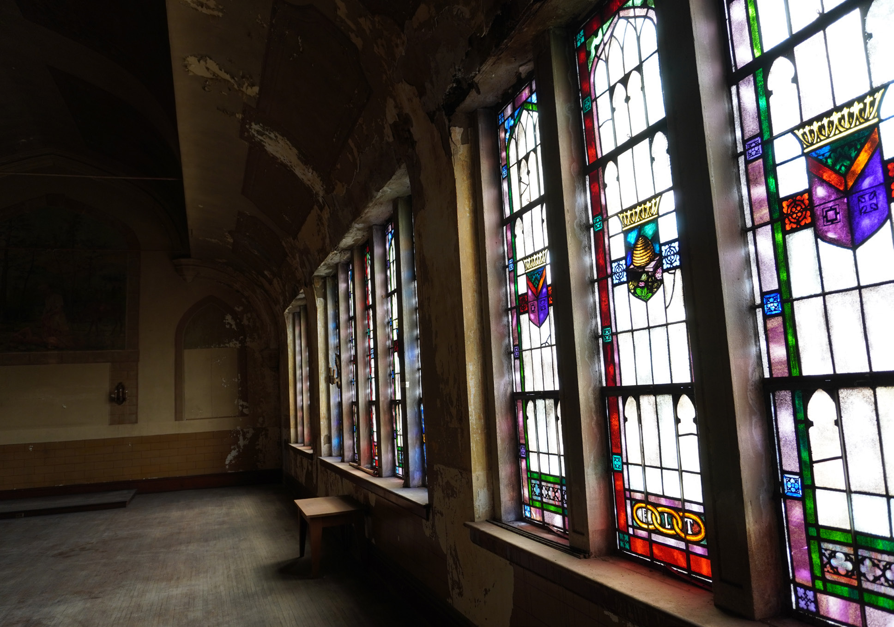

A landmark with a new chapter
Restore the Odd Fellows Building for classrooms, preservation learning and community events, with an exterior elevator proposed to improve access.
A campaign for Cumberland County
The places we preserve. The stories we pass on. Help make room for the next chapter of Cumberland County history.

Preserving the Past. Investing in the Future.
Cumberland County Historical SocietyMore than a place. A shared inheritance.
An object saved. A story discovered. A child’s first connection to the place they call home. The campaign brings preservation and possibility together—so Cumberland County’s history can be protected, shared and experienced by generations to come.

The heart of the project
The proposed restoration of the Odd Fellows Building would create spaces for learning, craftsmanship and community gathering—while preserving the hall’s extraordinary character.
See what comes next →What your support makes possible
Three connected investments in the places, collections and experiences that bring our shared history to life. These spaces are proposed as part of the campaign.
Restore the Odd Fellows Building for classrooms, preservation learning and community events, with an exterior elevator proposed to improve access.
Expand collections storage and improve research, scanning and digitization spaces so the county’s history can be safeguarded and shared.

Create a new visitor center, museum store and gallery space, alongside new opportunities for students and families to learn by doing.
Your part in the story
Help create a home for Cumberland County’s stories—and new ways for our community to discover them.
Preserving the Past. Investing in the Future.
Your gift can help keep our history alive—and open it to the people who will carry it forward.
A few things to know
The proposed project restores the Odd Fellows Building, expands collections storage, reimagines the visitor arrival experience, and adds spaces for education, research and digitization.
The campaign connects preservation with participation: a home for the county’s stories, a place to encounter them, and spaces where students and families can learn through hands-on experiences.
Yes. The supplied campaign plan includes pledges, cash or check, gifts of stock or appreciated securities, and corporate matching gifts. The campaign team will confirm the instructions and terms for each option.
The campaign plan includes donor recognition and naming opportunities. Speak with the campaign team to confirm current availability, gift terms and recognition preferences.
Campaign figures and construction milestones will be shared here once confirmed. This design preview does not present draft progress figures as current results.